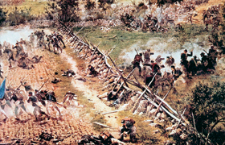

Lezione 14  Stati Uniti
Stati Uniti

La guerra civile americana scoppiò nel 1861 e durò fino al 1865. Lo scontro vide contrapporsi due modelli economici e culturali differenti. Il primo era quello degli stati del Nord: in rapido sviluppo industriale, si basavano sulla cultura e sullo spirito del capitalismo moderno, su rapporti di lavoro liberi. La classe dirigente era formata da imprenditori, banchieri, commercianti. Il secondo era quello degli stati del Sud: più conservatori, basavano la loro economia sulle grandi piantagioni di cotone e di tabacco, nelle quali lavoravano schiavi neri importati dall’Africa. I prodotti delle piantagioni venivano esportati nel resto degli Stati Uniti e in Europa, specialmente in Gran Bretagna. L’aristocrazia fondiaria bianca si riteneva, secondo la migliore tradizione razzista, superiore ai neri africani. I contrasti tra questi due modelli emersero in modo particolarmente acuto nelle nuove regioni che venivano colonizzate a Ovest, nelle quali si doveva stabilire che tipo di economia adottare. Emersero anche a livello politico, con l’elezione di Abraham Lincoln, antischiavista repubblicano, alla presidenza degli Stati Uniti, che provocò il distacco della Carolina del Sud. Con altri dieci stati meridionali nel 1860 la Carolina del Sud decise la secessione e la formazione di una propria confederazione. Ben presto scoppiò la guerra civile, e le forze messe in campo dai nordisti si rivelarono subito superiori, per i mezzi e per il numero di uomini. Nonostante ciò i sudisti guidati dal generale Lee riportarono alcuni successi iniziali. La superiorità del Nord risultò però decisiva nella battaglia di Gettysburg, e nel 1865 Lee fu costretto alla resa: la guerra costò al paese 600.000 morti ed enormi devastazioni. La vittoria del Nord pose fine alla secessione. Nel 1865 la schiavitù venne proibita in tutto il paese, e nel 1868 un emendamento della costituzione stabilì l’uguaglianza razziale come fondamento della convivenza civile.